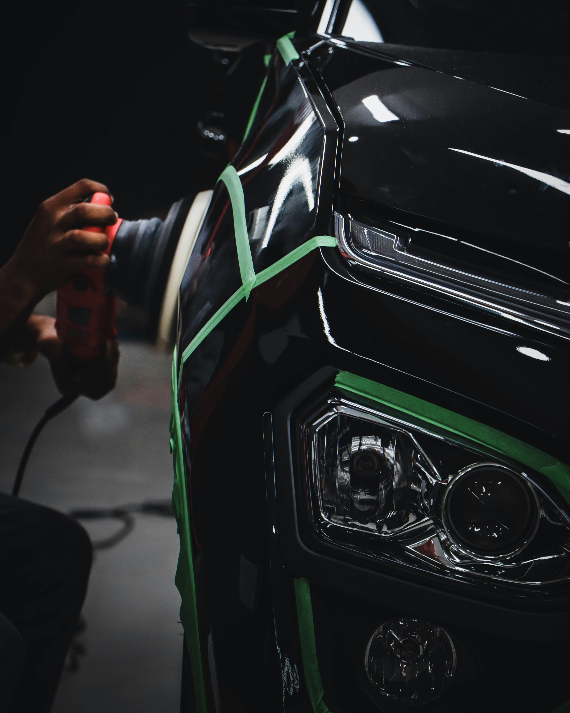

The finish
Paint Correction
Takes out the swirl marks and haze that make good paint look tired.
- Good for
- Swirl marks in direct sun, light scratches, dull or hazy paint.
- What happens
- A test panel, staged machine polishing, a wipe-down and a final check under hard light.
- Worth knowing
- A scratch that catches your fingernail has gone through the clear coat. That needs paint, not polish.
